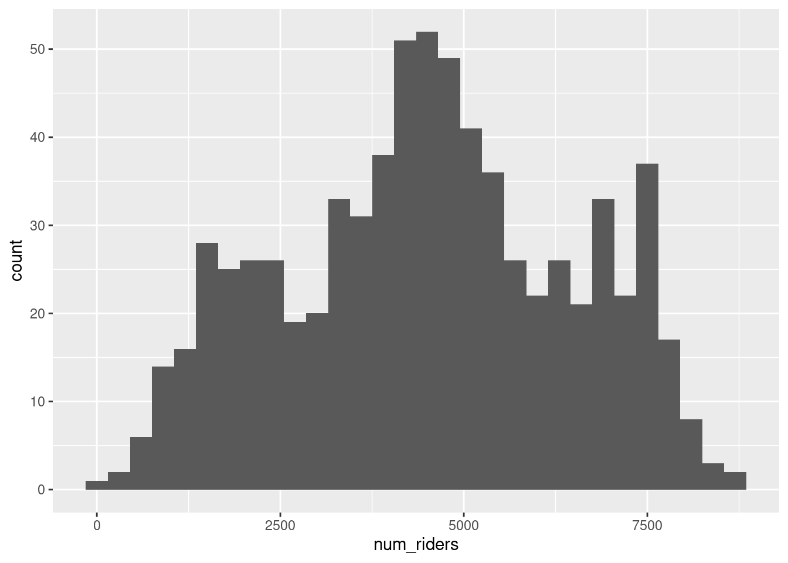
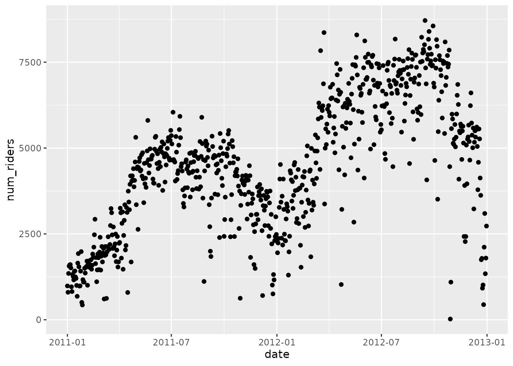
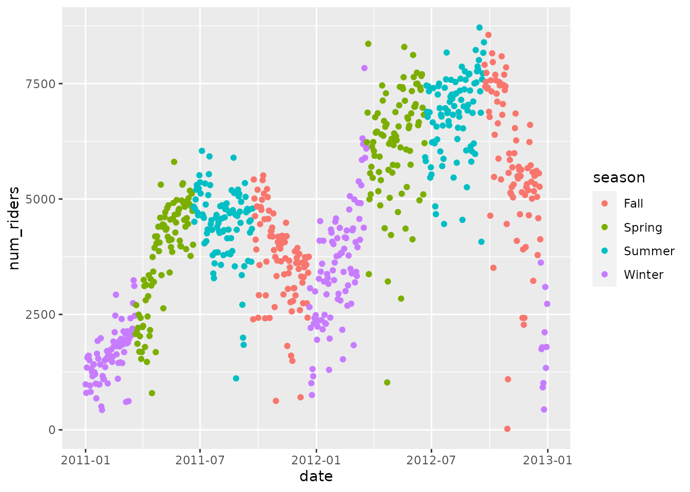
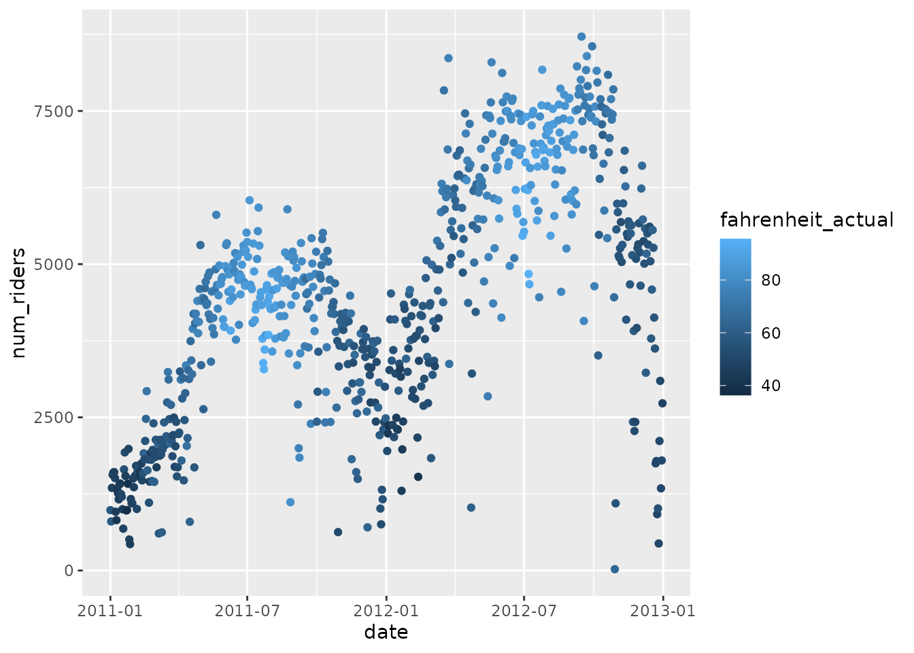
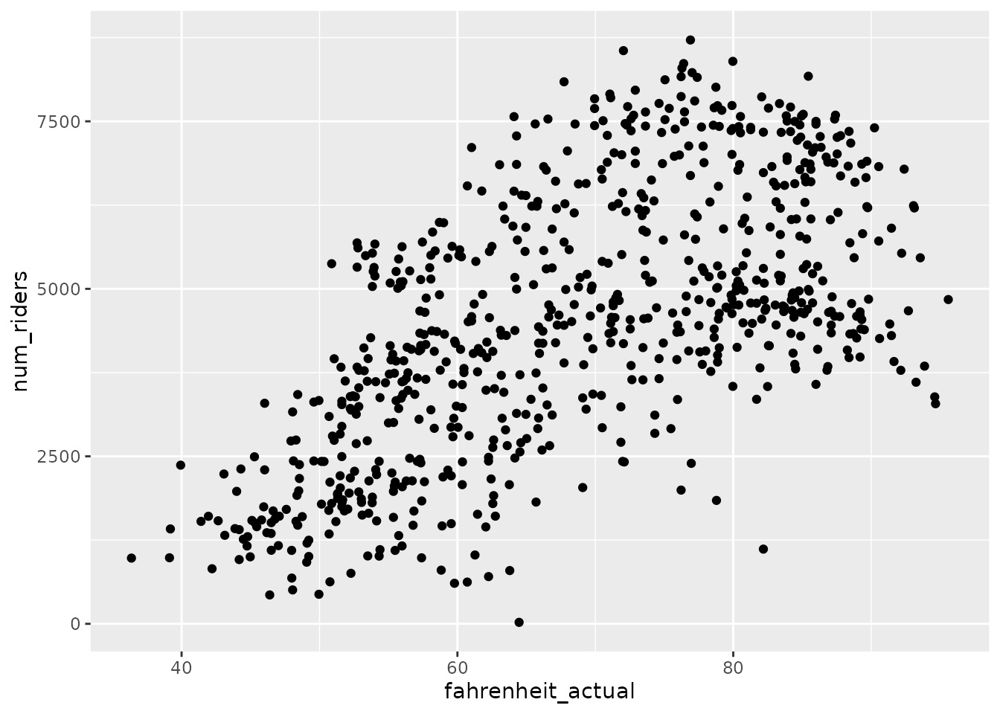
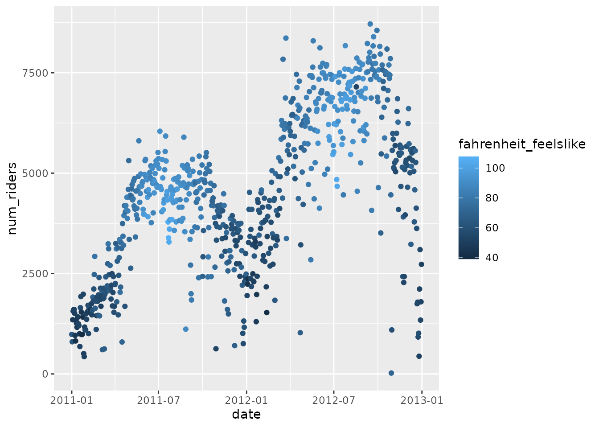

Lab 12 Exploring Data with R, Part II

In this session, we will do a bit of exploration with data. This is in keeping with the theme of our first session, only now enriched by the new tools and understanding we have developed since then.
Also in keeping with the theme of exploration, we will be looking at a single dataset about bike sharing. These data were recorded in 2011 and 2012 in Washington, DC. They record the number of riders in a new bike sharing program on each day. We will explore patterns in how bike sharing behavior changes across the year, with the weather, and during specific events. This may not be quite a satisfying as exploring on a real bike, but it comes pretty close.
To begin, let’s make sure we have our packages loaded from the library. We will need tidyverse and magrittr:
library(tidyverse)## ── Attaching packages ─────────────────────────────────────── tidyverse 1.3.0 ──## ✓ ggplot2 3.3.3 ✓ purrr 0.3.4
## ✓ tibble 3.1.1 ✓ dplyr 1.0.5
## ✓ tidyr 1.1.3 ✓ stringr 1.4.0
## ✓ readr 1.4.0 ✓ forcats 0.5.1## ── Conflicts ────────────────────────────────────────── tidyverse_conflicts() ──
## x dplyr::filter() masks stats::filter()
## x dplyr::lag() masks stats::lag()library(magrittr)##
## Attaching package: 'magrittr'## The following object is masked from 'package:purrr':
##
## set_names## The following object is masked from 'package:tidyr':
##
## extract12.1 Meet your data
Download the data into your R session with the following bit of code:
bike_data <- read_csv("https://raw.githubusercontent.com/gregcox7/StatLabs/main/data/bike.csv")##
## ── Column specification ────────────────────────────────────────────────────────
## cols(
## date = col_date(format = ""),
## year = col_double(),
## season = col_character(),
## month = col_double(),
## day = col_character(),
## holiday = col_logical(),
## workday = col_logical(),
## weather = col_character(),
## celsius_actual = col_double(),
## celsius_feelslike = col_double(),
## humidity = col_double(),
## windspeed = col_double(),
## num_riders = col_double()
## )Click on the data in RStudio’s “Environment” pane to get a sense of what is here. Each row corresponds to a specific day. Most of the variables are pretty self-explanatory. Our response variable of interest is num_riders, the number of people who used the bike share that day.
First, let’s make ourselves a histogram to get a sense of how ridership is distributed from day to day.
bike_data %>%
ggplot(aes(x = num_riders)) +
geom_histogram(binwidth = 300)
Exercise 12.1 Based on the histogram, describe the shape of the distribution. Does it seem skewed at all? Does it seem like there is just one mode, or many modes?
12.2 Answering questions with data
The histogram we just made shows how daily ridership is distributed over the two years we have records for, but it doesn’t tell us why ridership looks the way it does. Fortunately, our dataset contains many other variables that will let us understand why people choose to use bikes differently on different days.
The first thing we’ll do is make a scatterplot with the date on the horizontal axis and the number of riders on the vertical axis.
Exercise 12.2 Fill in the blanks in the code below to reproduce the scatterplot shown (hint: what are the names of the variables we want to put on the two axes? And what geom have we used to make scatterplots before?). What big trends do you see, and what shape do those trends seem to have?
bike_data %>%
ggplot(aes(x = ___, y = ___)) +
___()
12.2.1 Does ridership vary by season?
It looks like the time of year might be an important explanatory variable, so let’s try to answer the research question, does ridership vary by season?
12.2.1.1 Visualization
Before doing any kind of hypothesis test, let’s add a bit of color to the scatterplot we made above…literally! This will highlight any differences between seasons.
Exercise 12.3 Fill in the blanks in the code below to reproduce the scatterplot shown (hint: how did you fill in the blanks in the last exercise?). Does it seem like season explains a lot of the differences in bike riding? Does it look like there are other changes in bike riding over time that seasons might not explain?
bike_data %>%
ggplot(aes(x = ___, y = ___, color = season)) +
___()
12.2.1.2 Hypothesis testing
To see whether we have statistical evidence in favor of the idea that the seasons explain bike riding, we will conduct an Analysis of Variance.
- Translate your research question into a null and alternative hypothesis
As usual, the null hypothesis in ANOVA is that the population mean ridership is the same across all four seasons (\(H_0\): \(\mu_1 = \mu_2 = \mu_3 = \mu_4\)). The alternative hypothesis is that mean ridership is not the same across all four seasons (i.e., at least one season is different on average from the others).
- Select an alpha level
We’ll try a more conservative alpha level this time, say 0.01.
Find the \(F\) value
Find the \(p\) value
Decide whether or not to reject the null hypothesis
As usual, we will do steps 3 and 4 using a bit of R code and you’ll do step 5 based on the results.
Exercise 12.4 Fill in the blanks in the code below to reproduce the ANOVA table shown (hint: what are the names of the explanatory and response variable? What is the final line when we did ANOVA in prior labs?). Do you reject the null hypothesis? What does this say about how ridership varies by season?
bike_data %$%
lm(___ ~ ___) %>%
___()## Analysis of Variance Table
##
## Response: num_riders
## Df Sum Sq Mean Sq F value Pr(>F)
## season 3 950595868 316865289 128.77 < 2.2e-16 ***
## Residuals 727 1788939524 2460715
## ---
## Signif. codes: 0 '***' 0.001 '**' 0.01 '*' 0.05 '.' 0.1 ' ' 112.2.1.3 How much does season explain?
Finally, let’s ask how much of the variability in ridership can be explained by differences in season? This question is answered by the quantity \(\eta^2\), and we can get it directly from the entries in the ANOVA table we just made. As we know, the formula for \(\eta^2\) is
\[ \eta^2 = \frac{SS_B}{SS_B + SS_W} \] The numbers we need are given in the “Sum Sq.” column in the ANOVA table, so we can calculate \(\eta^2\) in R like so:
950595868 / (950595868 + 1788939524)## [1] 0.3469916The result above tells us the proportion of variability in ridership that can be explained by differences between seasons. That’s pretty respectable, but can we do better?
12.2.2 Does ridership vary with actual temperature?
As we saw above, it looked like there were substantial changes in ridership not just between seasons, but within seasons as well. For example, ridership tends to increase over the winter. Perhaps this is because of warming temperatures? In other words, can differences in ridership be explained by differences in temperature?
Note that our data includes two measures of temperature: A measure of the actual temperature that day (celsius_actual), and a measure of what the temperature felt like that day (celsius_feelslike).
We will first look at actual temperatures and then look at “felt like” temperatures in the next section.
12.2.2.1 From Celsius to Fahrenheit
For some reason, despite the fact that these data were recorded in the US, temperature was measured in degrees Celsius. For those of us who still think in degrees Fahrenheit, it will be useful to convert these temperatures. We can do this using mutate. We then tell R to remember the mutated dataset under the same name bike_data, so that we can use this variable later.
bike_data <- bike_data %>%
mutate(fahrenheit_actual = 1.8 * celsius_actual + 32)If you get an error about not finding the new temperature variable we just made, make sure you’ve run the chunk of code above!
12.2.2.2 Visualization
As above, let’s make ourselves a visualization so we can get a sense of how much temperature will be able to explain changes in bike riding behavior. Again, we will color in our scatterplot above. But now we will color it in based on temperature, not season.
Exercise 12.5 Fill in the blanks in the code below to reproduce the scatterplot shown (hint: how did you fill in the blanks in the last exercise? What is the name of the new temperature variable we just made?). Does it seem like temperature could account for a lot of differences in bike riding? Does it seem like a better explanation than the seasons?
bike_data %>%
ggplot(aes(x = ___, y = ___, color = ___)) +
___()
Interesting! Now let’s try looking at another scatterplot, this time with temperature on the horizontal axis and number of riders on the vertical axis, and no color.
Exercise 12.6 Fill in the blanks in the code below to reproduce the scatterplot shown (hint: what variables are we putting on which axes?). Does it seems like there is a positive or negative correlation between temperature and ridership? Does this correlation seem weak or strong?
bike_data %>%
ggplot(aes(x = ___, y = ___)) +
___()
12.2.2.3 Hypothesis testing
To see whether we have statistical evidence in favor of the idea that actual temperature explains bike riding, we will conduct an linear regression analysis.
- Translate your research question into a null and alternative hypothesis
The null hypothesis is that the slope of the linear relationship between actual temperature and ridership is zero (\(H_0\): \(b_1 = 0\)). The alternative hypothesis is that this slope is not equal to zero (\(H_1\): \(b_1 \neq 0\)).
- Select an alpha level
We’ll keep our alpha level from before at 0.01.
Find the \(F\) value
Find the \(p\) value
Decide whether or not to reject the null hypothesis
Again, we will do steps 3 and 4 using a bit of R code and you’ll do step 5 based on the results.
Exercise 12.7 Fill in the blanks in the code below to reproduce the table shown (hint: what are the names of the explanatory and response variable? What should the final line be?). Do you reject the null hypothesis? What does this say about how ridership varies with actual temperature?
bike_data %$%
lm(___ ~ ___) %>%
___()## Analysis of Variance Table
##
## Response: num_riders
## Df Sum Sq Mean Sq F value Pr(>F)
## fahrenheit_actual 1 1078688585 1078688585 473.47 < 2.2e-16 ***
## Residuals 729 1660846807 2278254
## ---
## Signif. codes: 0 '***' 0.001 '**' 0.01 '*' 0.05 '.' 0.1 ' ' 112.2.2.4 How much does season explain?
How much of the variability in ridership can be explained by differences in actual temperature? Again, we can answer this question using numbers from the table above to find \(r^2\), the proportion of variance in the response variable that can be explained by the explanatory variable. As we know, the formula for \(r^2\) is
\[ r^2 = \frac{SS_{\text{Model}}}{SS_{\text{Model}} + SS_{\text{Resid}}} \] By grabbing the relevant numbers from the “Sum Sq.” column above, we can calculate this in R like so:
1078688585 / (1078688585 + 1660846807)## [1] 0.3937487The result above is the proportion of variability in ridership that can be explained by differences in actual temperature.
We will also want to get the intercept and slope of this linear relationship.
Exercise 12.8 Fill in the blanks in the code below to get the slope and intercept of the line describing the relationship between actual temperature and bike ridership. Based on these results, if the actual temperature increases by one degree Fahrenheit, how many more riders would we expect to see?
bike_data %$%
lm(___ ~ ___)##
## Call:
## lm(formula = num_riders ~ fahrenheit_actual)
##
## Coefficients:
## (Intercept) fahrenheit_actual
## -1664.80 89.9812.2.3 Does ridership vary with perceived temperature?
It looks like we can do a good job explaining changes in ridership in terms of changes in temperature. But we just used the actual (thermometer) temperature. Maybe what matters more is the temperature it feels like on any given day, which is not just a matter of the thermometer, but also cloud cover, wind, humidity, etc.
The temperature that it felt like on each day is given in our dataset by the variable celsius_feelslike. Let’s repeat the analyses from the previous section using this different temperature variable and see if we can explain any more variance in riding behavior.
12.2.3.1 From Celsius to Fahrenheit
Again, we will convert the “felt like” temperature to Fahrenheit and use this for our analyses instead of Celsius.
bike_data <- bike_data %>%
mutate(fahrenheit_feelslike = 1.8 * celsius_feelslike + 32)Again, if you get an error about not finding the new temperature variable we just made, make sure you’ve run the chunk of code above!
12.2.3.2 Visualization
As above, let’s make ourselves a visualization so we can get a sense of how much temperature will be able to explain changes in bike riding behavior. Again, we will color in our scatterplot above. But now we will color it in based on temperature, not season.
Exercise 12.9 Fill in the blanks in the code below to reproduce the scatterplot shown (hint: how did you fill in the blanks in the last exercise? What is the name of the new temperature variable we just made?). Does this look any different than when we colored the plot using actual temperature? Are there any points that seem to have an unusual “felt like” temperature compared to nearby points?
bike_data %>%
ggplot(aes(x = ___, y = ___, color = ___)) +
___()
12.2.3.3 Hypothesis testing
To see whether we have statistical evidence in favor of the idea that the “felt like” temperature explains bike riding, we will conduct an linear regression analysis.
- Translate your research question into a null and alternative hypothesis
The null hypothesis is that the slope of the linear relationship between “felt like” temperature and ridership is zero (\(H_0\): \(b_1 = 0\)). The alternative hypothesis is that this slope is not equal to zero (\(H_1\): \(b_1 \neq 0\)).
- Select an alpha level
We’ll keep our alpha level from before at 0.01.
Find the \(F\) value
Find the \(p\) value
Decide whether or not to reject the null hypothesis
Again, we will do steps 3 and 4 using a bit of R code and you’ll do step 5 based on the results.
Exercise 12.10 Fill in the blanks in the code below to reproduce the table shown (hint: what are the names of the explanatory and response variable? What should the final line be?). Do you reject the null hypothesis? What does this say about how ridership varies with felt-like temperature?
bike_data %$%
lm(___ ~ ___) %>%
___()## Analysis of Variance Table
##
## Response: num_riders
## Df Sum Sq Mean Sq F value Pr(>F)
## fahrenheit_feelslike 1 1091003307 1091003307 482.45 < 2.2e-16 ***
## Residuals 729 1648532085 2261361
## ---
## Signif. codes: 0 '***' 0.001 '**' 0.01 '*' 0.05 '.' 0.1 ' ' 112.2.3.4 How much does season explain?
How much of the variability in ridership can be explained by differences in felt like temperature? Again, we can answer this question using numbers from the table above to find \(r^2\), the proportion of variance in the response variable that can be explained by the explanatory variable. The numbers we need are given in the “Sum Sq.” column in the able above, so we can calculate this in R like so:
1091003307 / (1091003307 + 1648532085)## [1] 0.3982439The result above is the proportion of variability in ridership that can be explained by differences in actual temperature.
Exercise 12.11 Is the proportion of variance explained by “felt like” temperature any higher than the proportion of variance explained by actual temperature? Which of the three variables we’ve looked at does a better job explaining riding behavior, season, actual temperature, or “felt like” temperature?
Finally, we will also want to get the intercept and slope of this linear relationship.
Exercise 12.12 Fill in the blanks in the code below to get the slope and intercept of the line describing the relationship between “felt like” temperature and bike ridership. Based on these results, if the “felt like” temperature increases by one degree Fahrenheit, how many more riders would we expect to see?
bike_data %$%
lm(___ ~ ___)##
## Call:
## lm(formula = num_riders ~ fahrenheit_feelslike)
##
## Coefficients:
## (Intercept) fahrenheit_feelslike
## -1721.49 83.3512.2.4 What’s up with those weird days?
In all the scatterplots we’ve made above, you may have noticed that there are some summer days that would normally have large numbers of riders, but actually have very low ridership. It’s a bit hard to see the actual days on the plots, so here are a few of these apparent “outlier” days with very low ridership:
- 2011-08-27
- 2012-04-22
- 2012-10-29
Exercise 12.13 Use your search engine of choice to do a search using each of the dates given above plus the term “Washington DC” (where these data were recorded). What unusual events were happening on each of these three days in the DC area that might explain the abnormally low ridership on these days?
12.3 Wrap-up
We have explored an interesting dataset with the aim of explaining why bike riding behavior change from day to day. We have illustrated the power of both visualization and inferential statistics for helping us use data to answer interesting questions. We have also discovered outliers and gone beyond our data to understand why they might have occurred.